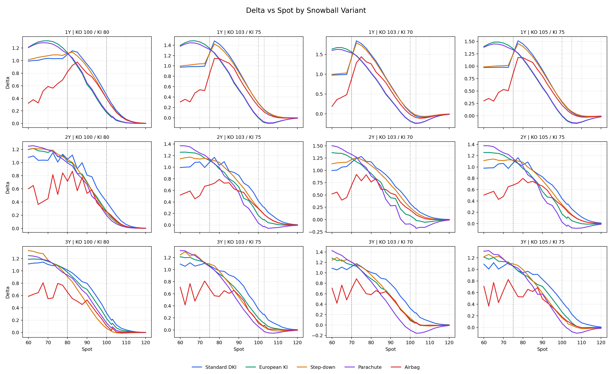
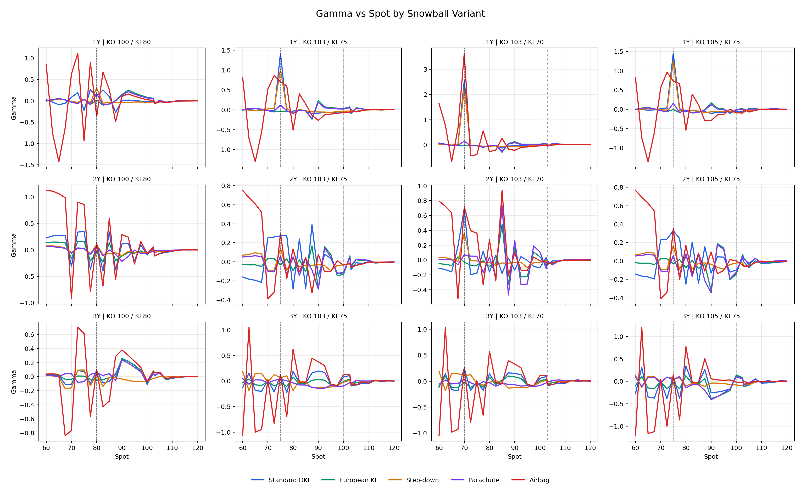
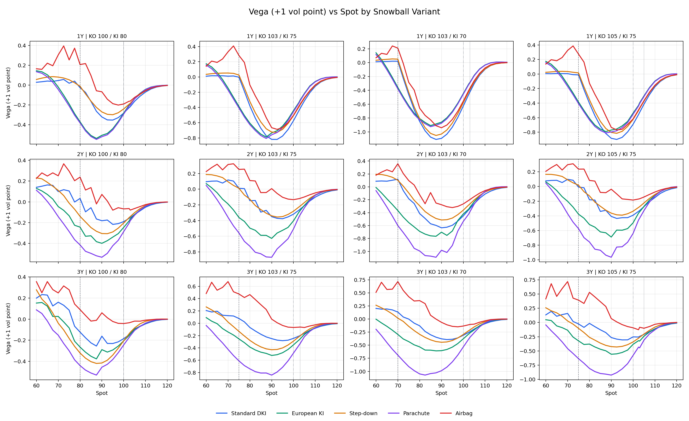
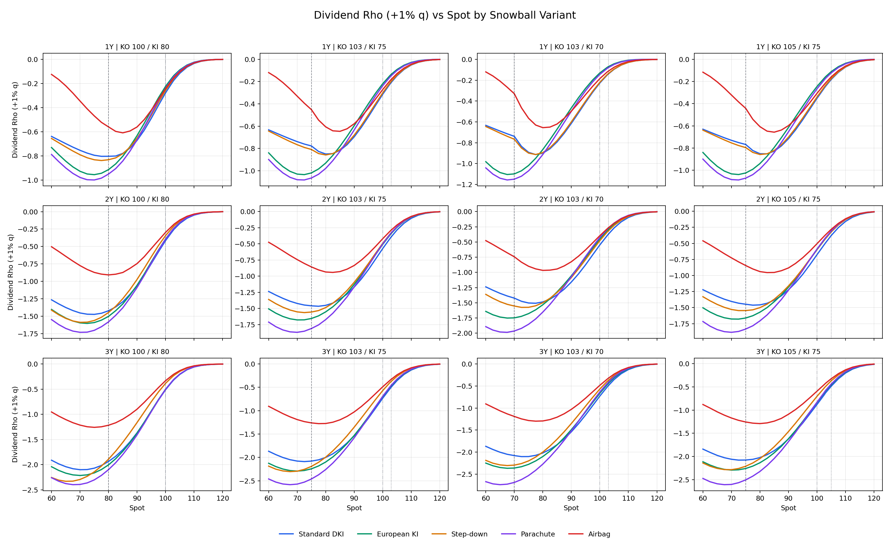

Comparison across five Snowball variants, tenors 1Y/2Y/3Y, and four KO/KI combinations. Market assumptions: S0=100, strike=100, vol=22%, r=2%, q=3%, KO coupon=15%, ex-principal payoff convention.
| Variant | Definition |
|---|---|
| Standard DKI | Standard Snowball, continuous down-and-in monitoring. |
| European KI | European KI Snowball, KI checked only at maturity. |
| Step-down | Step-down Snowball, KO barrier decreases 0.5% of initial per month. |
| Parachute | Parachute Snowball, final KO barrier drops to the KI level. |
| Airbag | Airbag Snowball, reduced participation below 60% spot. |
| Combination | KO | KI |
|---|---|---|
| KO 100 / KI 80 | 100.0 | 80.0 |
| KO 103 / KI 75 | 103.0 | 75.0 |
| KO 103 / KI 70 | 103.0 | 70.0 |
| KO 105 / KI 75 | 105.0 | 75.0 |
Base point: S=100, KO 103 / KI 75.
| Tenor | Variant | Price | Delta | Gamma | Vega | DivRho |
|---|---|---|---|---|---|---|
| 1Y | Airbag | 0.4781 | 0.2203 | -0.06953 | -0.5031 | -0.2717 |
| 1Y | European KI | 2.4857 | -0.0021 | 0.02950 | -0.4406 | -0.2190 |
| 1Y | Parachute | 2.3778 | 0.0083 | 0.01751 | -0.4559 | -0.2376 |
| 1Y | Standard DKI | 0.1161 | 0.2794 | -0.04955 | -0.5741 | -0.3139 |
| 1Y | Step-down | -0.0001 | 0.2860 | -0.03480 | -0.5073 | -0.3010 |
| 2Y | Airbag | -0.2921 | 0.2843 | -0.03525 | -0.1334 | -0.4211 |
| 2Y | European KI | 0.6300 | 0.1632 | -0.13255 | -0.4032 | -0.5081 |
| 2Y | Parachute | 1.8087 | 0.0333 | -0.10874 | -0.5069 | -0.5004 |
| 2Y | Standard DKI | -1.4868 | 0.4165 | -0.13038 | -0.3183 | -0.5733 |
| 2Y | Step-down | -0.2745 | 0.2922 | -0.03189 | -0.2807 | -0.4923 |
| 3Y | Airbag | 0.7396 | 0.1128 | 0.13126 | -0.0679 | -0.4898 |
| 3Y | European KI | 0.4147 | 0.1954 | -0.00679 | -0.3501 | -0.6988 |
| 3Y | Parachute | 1.8355 | 0.0547 | -0.09615 | -0.4835 | -0.6916 |
| 3Y | Standard DKI | -1.0486 | 0.3436 | 0.07926 | -0.2450 | -0.7338 |
| 3Y | Step-down | 1.1444 | 0.1388 | -0.02251 | -0.2897 | -0.5706 |
Chart markers: dashed vertical line = KI barrier, dotted vertical line = KO barrier, dash-dot vertical line = S0.




Full data cube: snowball_greeks_spot_data.csv. KO/KI appendix charts are under plots/combo_slices/.